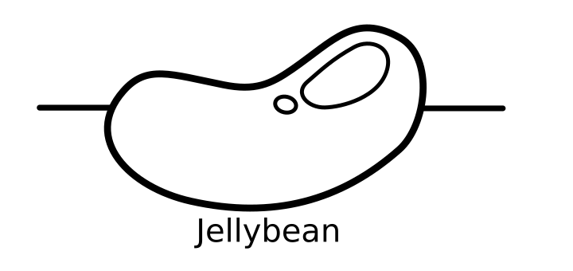

Getting started in electronics design is a spectacular voyage, but making the transition from theory to practice can be a daunting task. Components in the real world have non-ideal properties, resulting in a combinatorial explosion of subtle variations in manufacture, contributing to an unwieldy list of products to choose from. Given such an expansive assortment of components, how do you determine which is right for your applications?
When practicing the art of electronics it would be desirable to reference a well understood collection of fail-safe components to keep on hand. These components need not be the best choice for any specific usage scenario, but should serve as capable defaults providing savings in both time and money on trial and error. Such components are often affectionately referred to as “jellybeans”.
This post is dedicated to the humble jellybean in hopes to aid the intrepid engineer looking for guidance establishing a parts bin. I will attempt to highlight each component’s primary characteristics of concern which I denote with the acronym PCOC (I pronounce this peacock as in the bird) as there are simply not enough acronyms in engineering already. I will also link to relevant datasheets where applicable.
Summary information is provided to highlight important usage considerations of each type of component, although this is not intended as a comprehensive tutorial. I plan on writing such tutorials in future articles.
It is important to note that much of this document is centered on through hole technology as this has traditionally been the prefered technology for prototyping. Advances in surface mount technology, along with a dwindling supply of through hole parts for newer products, has began a chain reaction which will undoubtably lead to expansion of SMT usage in hobby circles.
Many of the products discussed below have SMT varients, however, you may likely find more modern and vastly superior products using parametric search functions of popular online vendors. The PCOC information is still valid and serves as a good reference when searching for project specific parts.
There are now several vendors that provide breakout boards for SMT to breadboard compatible pinouts which can come in handy for one off prototypes. SPICE simulators and low volume manufacturing have given rise to another more abstract approach to prototyping.
Integrated Circuits are also becoming more prolific replacing the function of descrete components with prebuilt solutions.
I will try to update this information periodically, but if you have questions, comments, complaints or suggestions feel free to drop me a line matt@theknowledgeaccelerator.com.
Resistors
PCOC
- Resistance in Ohms (Ω)
- Power Dissipation in Watts (W).
Usage Summary
You should always leave adequate headroom on power dissipation, a good rule of thumb being twice the power required.
Resistors are so fundamental, cheap, and small that it is not uncommon to keep a wide range of values on hand. The values given below are often sufficient and alternate values can be obtained from placing resitors in series or parallel.
If more granular values are desired and tolerance is a concern a much wider selection can be obtained from the many IEC 60063 standard E-Series values. To manage cost and inventory it is recommended to choose the lowest E-Series required (Ex: E12 vs E48).
You can purchase starter kits with E12 1% tolerance metal film resistors fairly cheap online which is more then enough variety to get started.
Jellybeans
Fixed Value
Resistance: 1k Ω, 10k Ω
Power: 1/4 W, 1/2 W
SMT/Power: 2012 Metric (0805 Imperial) 1/32 W, 3216 Metric (1206 Imperial) 1/16 W
Example DataSheets: Carbon Film, Metal Film
Other Info: Panasonic Standards Information, sparkfun tutorial, Wikipedia
Variable
Resistance: 10k Ω, 100k Ω
Power: 1/2 W
Other Info: Commonly used to allow end user adjustments (ex: Volume control)
RM065 6mm single turn, 0.1 W
3386 9mm square single turn, 0.5 W
3296 9mm square multi turn, 0.5 W
Other Info: Commonly used for “set it and forget it” adjustments
Capacitors
PCOC
- Capacitance in Farads (F)
- Maximum Voltage in Volts (V)
Usage Summary
Capacitors, much like resistors, are low enough cost and are utilized by most any project that people tend to keep a variety of values on hand.
It is important to de-rate your caps adequately according to thier voltage rating or bad things can happen. De-rating too much can also be undesirable in the form of excess ripple ultimately lowering the life of the cap. There are some that suggest 2 to 3 times the rated voltage for simplicity but often 20% to 50% the voltage specification will do (unless high operating temperatures dictate further increase).
Capacitors are physically one of the largest components used in many projects so actual package size is often a consideration along with leakage current, ESR, and tolerance.
I have separated the jellybean caps by categorizing as polarized and non-polarized, however, polarity is not a factor often considered when selecting between them. Polarized capacitors simply have an added usage restriction where one end, marked as the negative electrode (cathode), must always be placed at the negative voltage with respect to the positive electrode (anode) or risk catastrophic failure. This restriction is often overlooked by the savings in cost and overall size per equivalent capacitance in the non-polarized variety.
Jellybeans
Polarized
Capacitance: 10uF, 100uF - 1000uF
Max Volts: 10v - 630v application specific as noted above
Example DataSheets: Aluminum Electrolytic Caps
Non-Polarized
Capacitance: 10 uF, 1 uF, 0.1 uF (decoupling), 100 nF, 10 nF, 1 nF, 22 pF (load caps for crystals)
Max Volts: 16v - 630v application specific as noted above
Example DataSheets: Ceramic Caps
Diodes
PCOC
For Zeners
- Power dissipation in Watts (W)
- Reverse breakdown voltage in Volts (V) “Zener breakdown”
For TVS
- Stand-Off voltage in Volts (V)
- Peak pulse power dissipation in Watts (W)
- Peak pulse current in Amps (A)
- Clamping voltage in Volts (V)
For All others
- Current rating in Amps (A)
- Maximum voltage in Volts (V)
- Forward voltage drop in Volts (V)
Usage Summary
Silicon diodes are the most common with the 1N4000 series often used in AC adapters for common household appliances. When higher current is desired you can opt for the similarly popular 1N5400 series for up to 3A.
For lower current switching applications the 1N4148 is very popular and can be used on signals up to 100 MHz.
When a very low voltage drop or high switching speed is important the Schottky diode can come in handy.
Zener diodes are intentionally wired in reverse to take advantage of thier stable and often well defined reverse breakdown voltage. Zeners are often used as voltage regulators or references.
TVS diodes are similar to Zeners but instead of voltage regulation are used for voltage suppression. TVS have an extremely fast reaction time making them ideal components for protecting circuits from voltage spikes.
Light emitting diode (LEDs) are used to produce light and have a higher forward voltage drop then the other common diodes. The forward voltage drop often depends on the color of light emitted.
Photodiodes on the other hand are used to generate a current from a light source.
Jellybeans
Silicon
Schottky
Usage: Barrier Rectifier
Current rating: 1A
Max Voltage: 20 V, 30V, 40V
Voltage Drop: 0.45V, 0.55V, 0.60V
Usage: Barrier Rectifier
Current rating: 3A
Max Voltage: 20 V, 30V, 40V
Voltage Drop: 0.475V, 0.500V, 0.525V
Usage: Barrier Rectifier
Current rating: 7.5A
Max Voltage: 35 V, 45V
Voltage Drop: 0.57V
Zener
TVS
Usage: Transient Voltage Suppressor (voltage spike protection)
Stand-Off voltage: 5.8V - 459V
Peak pulse power dissipation: 1500 W
Peak pulse current: 143A - 2A
Clamping voltage: 10.5V - 740V
Transistors
PCOC
- Polarity ( BJT: PNP or NPN FET: P-Channel or N-Channel )
- Voltage rating in Volts (V) ( BJT: Collector-Emitter FET: Drain-Source)
- Current rating in Amps (A) ( BJT: Collector FET: Drain)
- Power dissipation in Watts (W)
For BJTs
- Base-Emitter saturation in Volts (V) (aka: base-emitter on voltage)
- Current Gain (Current multiplier no units) (aka: Beta, Hfe)
For MOSFETs
- Drain-Source On Resistance (Ω)
- Gate-Source Threshold Voltage (V)
Usage Summary
Transistors are the basic building blocks behind the majority of modern electronics. These increadible devices are conceptually simple yet surprisingly complex at the same time.
Transistors in the most simplistic sense are used as a sort of electronic switch or amplifier. A signal is used to control a much larger signal much like a valve can be used to control the flow of water.
The complexity can only begin to be appreciated by looking at the various parameters and characteristic curves in their datasheets. The primary characteristics mentioned above are often enough to consider up front until you find the need to further refine your designs.
The list below is just a tiny sample of the enormous selection of transistors available. Many of them are fairly interchangeable depending on the application requirements so you are free to pick your poison as it were.
BJTs and MOSFETs are by far the most common although some applications may benifit from other types such as JFETs or IGBTs. Most hobby use, however, can safely ignore these other types.
BJTs tend to be used for lower power applications (often due to cost savings) while MOSFETs are preferred for higher power applications. BJTs are bipolar devices that are current driven while MOSFETs are unipolar devices and voltage driven. BJTs were traditionally more common, but modern devices rely much more heavily on MOSFETs.
As with any other component you must keep in mind maximum ratings and leave adequate headroom to ensure proper operation. The max power dissipation is often inclusive of active cooling such as using a heat sink in order to attain ambient temperature so it can be a good idea to calculate it for your application with the following formula where ThetaJA = Thermal Resistance, junction to ambient:
Max Power = (Max Junction Temp - Ambient Temp) / ThetaJA
MOSFETs with a low threshold voltage (normally 0.5-2 volts) and low drain source resistance (often specified for Vgs=5V or 4.5V in the datasheet) are considered “logic level”. This allows them to be driven directly by the low voltage logic outputs of a microcontroller or GPIO pins on an Arduino, Raspberry Pi, or other development boards. You may still find a resistor being used at the gate due to gate capacitance and possibly a larger pull-down resistor ensuring the FET doesn’t “float”.
It is a common mistake to drive a normal FET from logic levels, resulting in excess power loss as the FET will be operating in ohmic mode and thus acting like a resistor. If the application requires a normal FET then a driver circuit should be used.
A final consideration worth mentioning is switching speed which is normally specified in MHz.
Jellybeans
BJT
Polarity: NPN
Voltage rating: 30V
Current rating: 100mA
Power dissipation: 625mW
Base-Emitter on: 0.7V
Gain: 110-800
Polarity: PNP
Voltage rating: 30V
Current rating: 100mA
Power dissipation: 500mW
Base-Emitter on: 0.7V
Gain: 110-800
Polarity: NPN
Voltage rating: 40V
Current rating: 200mA
Power dissipation: 625mW
Base-Emitter on: 0.65V - 0.95V
Gain: 60-300
Polarity: PNP
Voltage rating: 40V
Current rating: 200mA
Power dissipation: 625mW
Base-Emitter on: 0.65V - 0.95V
Gain: 60-300
Polarity: NPN
Voltage rating: 30V
Current rating: 600mA
Power dissipation: 625mW
Base-Emitter on: 2V
Gain: 35-300
Polarity: PNP
Voltage rating: 40V
Current rating: 800mA
Power dissipation: 625mW
Base-Emitter on: 1.3V-2.6V
Gain: 35-300
Polarity: NPN
Voltage rating: 40V
Current rating: 600mA
Power dissipation: 625mW
Base-Emitter on: 0.75V - 1.2V
Gain: 20-300
Polarity: PNP
Voltage rating: 40V
Current rating: 600mA
Power dissipation: 625mW
Base-Emitter on: 0.75V - 1.3V
Gain: 20-300
Polarity: NPN (Darlington)
Voltage rating: 60V-100V
Current rating: 5A
Power dissipation: 2W
Base-Emitter on: 2.5V
Gain: 1000
Polarity: PNP (Darlington)
Voltage rating: 60V-100V
Current rating: 5A
Power dissipation: 2W
Base-Emitter on: 2.5V
Gain: 1000
Polarity: NPN (Power)
Voltage rating: 60V-80V
Current rating: 10A
Power dissipation: 70W
Base-Emitter on: 1.5V
Gain: 60
Polarity: PNP (Power)
Voltage rating: 60V-80V
Current rating: 10A
Power dissipation: 70W
Base-Emitter on: 1.5V
Gain: 60
MOSFET
Polarity: N-Channel
Voltage rating: 60V
Current rating: 200mA
Power dissipation: 400mW
Drain-Source on: 1.2Ω
Gate-Source Threshold: 0.8V-3V
Polarity: P-Channel
Voltage rating: 60V
Current rating: 180mA
Power dissipation: 830mW
Drain-Source on: 14Ω
Gate-Source Threshold: 1V-3.5V
Polarity: N-Channel (Power)
Voltage rating: 100V
Current rating: 5.6A
Power dissipation: 43W
Drain-Source on: 0.54Ω
Gate-Source Threshold: 2V-4V
Polarity: P-Channel (Power)
Voltage rating: 100V
Current rating: 4A
Power dissipation: 43W
Drain-Source on: 1.2Ω
Gate-Source Threshold: 2V-4V
Polarity: N-Channel (Power)
Voltage rating: 60V
Current rating: 43A
Power dissipation: 71W
Drain-Source on: 12.6mΩ
Gate-Source Threshold: 2V-4V
Polarity: N-Channel (Power - logic level)
Voltage rating: 55V
Current rating: 47A
Power dissipation: 110W
Drain-Source on: 25mΩ
Gate-Source Threshold: 1V-2V
Polarity: N-Channel (Power - logic level)
Voltage rating: 100V
Current rating: 36A
Power dissipation: 140W
Drain-Source on: 53mΩ
Gate-Source Threshold: 1V-2V
Polarity: N-Channel (Power - logic level)
Voltage rating: 60V
Current rating: 32A
Power dissipation: 79W
Drain-Source on: 45mΩ
Gate-Source Threshold: 1V-2.5V
Integrated Circuits (ICs)
PCOC
- Usage
Usage Summary
Integrated Circuits (ICs) encapsulate some functional circuitry and expose an interface from which an external circuit can operate providing simplification, reuse, and space savings in the host circuit.
Jellybeans
Regulators
Timers
Operational Amplifiers (Op-amps)
LM358/LM2904
TL071-TL074
LM324
CA3140
TS922
Comparators
USB to serial
CP2012
MCP2200
Voltage_Reference
LM336
Other Info: Many newer voltage references come in surface mount packages. Linear Technology has a nice document on how to choose a voltage reference
Logic
Amplifier
Inductors
PCOC
- Inductance in Henrys (H)
Usage Summary
Although one of the most basic components, along with resistors and capacitors, inductors are not often kept on hand by hobby electronics enthusiasts. Inductors are often constructed when needed from wire and possibly some form of magnetic core. Ferrite cores can be purchased or salvaged from old electronics.
Inductive devices also include electric motors / generators and relays.
Some Inductors are color coded and look very similar to resistors.
Switches
PCOC
- Actuation method
- Momentary or maintained
- Pole and throw count
- Current rating in Amps (A)
Usage Summary
There is a vast selection of switches available today with actuation methods for any physical interaction you can think of. Push buttons are pretty much the most widely used along with rockers and slide actuated varieties. There are also more exotic switches that react to temperature, humidity, acceleration, pressure, magnetic fields, and much more. Transistors and Relays can even be considered electronic switches.
Switches come in either momentary or maintained activation the former being activated only when actuated and the later remaining activated until actuated into another state.
Pole and throw count are another defining characteristic of switches. Pole count dictates the number of separate circuits the switch can control, while throw count defines the number of positions each of the switch’s poles can be connected to. Many switches are referred to by a short hand abbreviation in the form XPYT where X and Y are the number of poles and throws respectively. When either count is below three an S or D is used instead to denote Single and Double. SPST, SPDT, DPST, 4PDT, etc.
Jellybeans
Crystals, Resonators, and Oscillators
PCOC
- Frequency in Hertz (Hz)
Usage Summary
Oscillators are commonly used as clock sources for microcontrollers, radio frequency generators for remote controlled devices or other broadcasting, sound generation, and other signal generation applications. They can be built from many different combinations of components. Crystals, Resonators, and even simple building block circuits such as RCs provide various frequencies with tradeoffs between cost and accuracy. Crystals are far more accurate, but cost more then resonators.
Crystals and Resonators require external circuitry to jump start and maintain the oscillation, however, Oscillators can be purchased as stand alone products with such circuitry built in at a higher cost.
A general array of common frequencies and thier applications can be found here. I have provided a summary of some of the more common frequencies (often produced with quartz crystals) in the jellybean section below.
Jellybeans
1MHz
4MHz
6MHz
8MHz
10MHz
12MHz
16MHz
20MHz
24MHz
25MHz
Further reading: